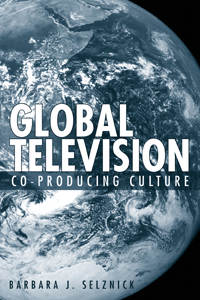

<body bgcolor="#FFFFFF" text="#000000" link="#0000FF" vlink="#CC0000" alink="#CC0000"><center><hr width="350" size="1" align="center" noshade>How the importation of global television in the United States affects the nature of programming<hr width="350" size="1" align="center" noshade><p><a href="https://cdcshoppingcart.uchicago.edu/Cart/ChicagoBook.aspx?ISBN=9781592135035&&PRESS=temple" target="_top">Buy this book!</a> | <a href="https://cdcshoppingcart.uchicago.edu/Cart/Cart.aspx?PRESS=temple" target="_top">View Cart</a> | <a href="https://cdcshoppingcart.uchicago.edu/Cart/Cart.aspx?PRESS=temple" target="_top">Check Out</a></p><p></p></center><!--none//--><h1>Global Television</h1>
<H2>Co-Producing Culture</H2>
<h3>Barbara J. Selznick</h3>
<P>cloth 159213503X $80.50, Jun 08, <FONT COLOR=#990033>Available</FONT>
<br>paper 1592135048 $29.95, Jun 08, <FONT COLOR=#990033>Available</FONT>
<br>Electronic Book 1592135056 $29.95 <FONT COLOR=#990033>Available</FONT>
<BR> 224 pp
5.5x8.25
8&nbsp;halftones
</P><BLOCKQUOTE><I>"</i>Global Television<i> is well focused, disciplined, imaginative, and original; the global outlook and free ranging expertise across borders are signature virtues. It looms to be a blueprint for the emergent field of globally-centric media studies."</I>
<br>&#151<b>Thomas Doherty </b>, American Studies Department, Brandeis University</I></BLOCKQUOTE>
<p>The face of U.S. television broadcasting is changing in ways that are both profound and subtle. <i>Global Television</i> uncovers the particular processes by which the international circulation of culture takes place, while addressing larger cultural issues such as identity formation.
<p>Focusing on how the process of internationally made programming such as <i>Highlander: The Series</i> and <i>The Odyssey</i>�amusingly dubbed �Europudding� and �commercial white bread��are changing television into a transnational commodity, Barbara Selznick considers how this mode of production�as a means by which transnational television is created�has both economic rewards and cultural benefits as well as drawbacks.
<p><i>Global Television</i> explores the ways these international co-productions create a �global� culture as well as help form a national identity. From British �brand� programming (e.g, <i>Cracker</i>) that airs on A&E in the U.S. to children�s television programs such as <i>Plaza Sesamo</i>, and documentaries, Selznick indicates that while the style, narrative, themes and ideologies may be interesting, corporate capitalism ultimately affects and impacts these programs in significant ways.
<BR>&nbsp;<h2>Excerpt</h2><P>Excerpt available at <a href="http://www.temple.edu/tempress">www.temple.edu/tempress</a></p>
<BR>&nbsp;<h2>Reviews</h2>
<P><I>"An interesting treatment of this phenomenon. Summing Up: Recommended." </i><br><b>&#151 Choice</b>
<BR>&nbsp;<h2>Contents</h2><P>
<br>Introduction: <i>McTelevision in the Global Village</i>
<br>1. History without Nation: <i>Global Fiction</i>
<br>2. Clear, Strong Brands: <i>British Television as a Marketing Tool</i>
<br>3. The Three C's: <i>Children, Citizenship and Co-Production</i>
<br>4. Global Truths: <i>Documentaries for the World</i>
<br>Conclusion: <i>Transculturation or the Expansion of Modern Capitalism</i>
<br>Notes
<br>Works Cited
<br>Index
</P><BR>&nbsp;<H2>About the Author(s)</H2>
<table><tr><td valign="top"><img src="/tempress/authors/1855_au.gif" height="90" width="75"></td><td width="100%" valign="middle"><p><b>Barbara J. Selznick</b> is an Associate Professor in the School of Media Arts, The University of Arizona and author of <i>Sure Seaters: The Emergence of Art House Cinema</i>.</P></td></tr></table>
<BR><H2>Subject Categories</H2>
<p><A HREF="/tempress/mass_media.html" TARGET="_top">Mass Media and Communications</a>
<BR><A HREF="/tempress/cultural.html" TARGET="_top">Cultural Studies</a>
<BR><A HREF="/tempress/american.html" TARGET="_top">American Studies</a>
</p>
<BR><h2 class="inpageheading">In the series</H2>
<P><I><a href="http://www.temple.edu/tempress/emerging_media.html" onMouseOver="window.status='Click for other books in this series!'; return true;" onMouseOut="window.status=''; return true;" target="_top">Emerging Media: History, Theory, Narrative</a></i>, edited by Daniel Bernardi.
</p><p>Moving beyond the reductive and ambiguous conclusions that new media is either utopian or dystopian, this series will situate emerging media in the context of history, art, and theory. Books in the series will address the fact that new media is shaped by specific historic currents, from the history of communication technologies, to the history of mass entertainment, to the tradition-bound practices of multimedia design. These historical underpinnings of new media forms will also engage the insights of artists, storytellers, and theorists.</p>
<p align="center"><a href="https://cdcshoppingcart.uchicago.edu/Cart/ChicagoBook.aspx?ISBN=9781592135035&&PRESS=temple" target="_top">Buy this book!</a> | <a href="https://cdcshoppingcart.uchicago.edu/Cart/Cart.aspx?PRESS=temple" target="_top">View Cart</a> | <a href="https://cdcshoppingcart.uchicago.edu/Cart/Cart.aspx?PRESS=temple" target="_top">Check Out</a></p><p><font face="Arial" size="1"><a href="copyright.html" onMouseOver="window.status='Web Copyright Policy';return true;" onMouseOut="window.status=''" title="Web Copyright Policy">&copy;</a> 2015 <a href="http://www.temple.edu" target="new" onMouseOver="window.status='Link to Temple University home page';return true;" onMouseOut="window.status=''" title="Link to Temple University home page">Temple University</a>. All Rights Reserved. http://www.temple.edu/tempress/titles/1855_reg.html</font></p>